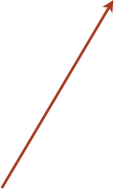

CaCO3 (10.4) surface


12. With Bb increase along the 3rd direction, for instance, using 0 1 in the 3rd direction, and preview the structure to check if the gap is right.

30 A
13. tetr has the option to fix some of the atoms of the structure. This is very useful if we want to use some layers to mimic the bulk.
Lets say we wish to fix one bottom layer. With tetr you can do it in a very clever way especially if your system is big. You type:
B0 to nullify the breeding box, Co to show the list of atoms, then preview the structure with Xmakemol showing the atomic numbers.

The easiest way to fix the bottom layer is to select these atoms on the base of their position with respect to the z-direction to create a list, since the surface is perpendicular to this direction. Type Fa which will open a new menu basically identical to the TT menu::
In “general settings”, we can select an interval along the z-direction which comprises the atoms we would like to select. Thus, type Z .

We want to create a list of atomic numbers corresponding of the bottom layer. Thus type -I (minus infinity) as the lowest limit and -3.80 as the upper limit and then Cr.




Atoms added to the list
To be sure you created the right list type Co that will show you the atoms with their positions and the tag. The atoms with the tag (Y) are the atoms included in the list of the fixed atoms.